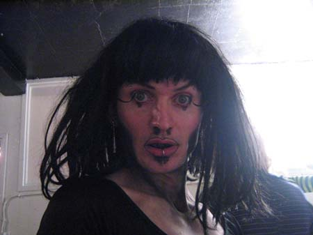
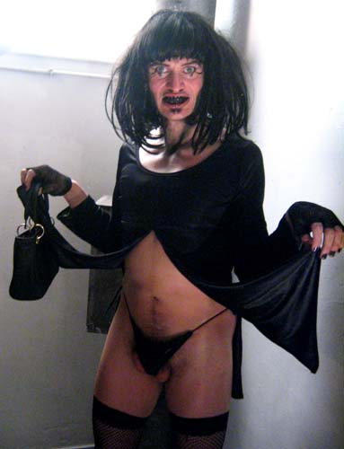
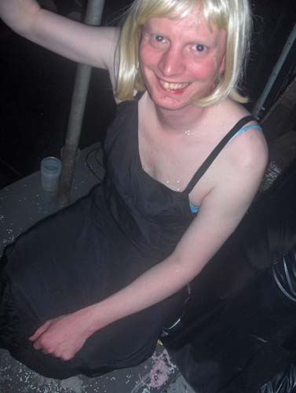
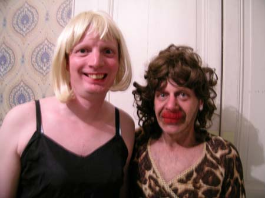
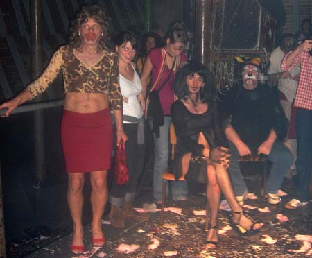
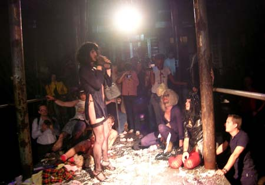
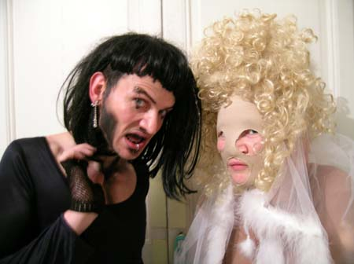
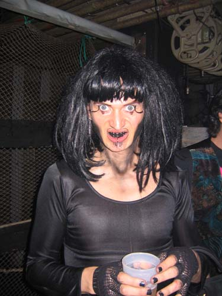
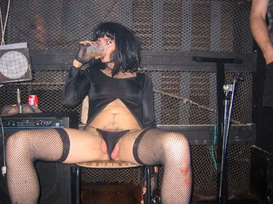
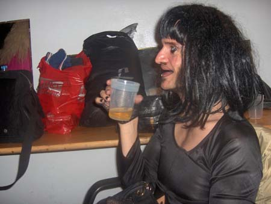

Dunst at Be Queer #2, Stubnitz, Dunkerque, France. |

Dennis Agerblad

Dennis Agerblad

Tove Hansen & Dennis Agerblad

Tove Hansen

Tove Hansen og Søde CAR O'lina

Søde CAR O'lina & Dennis Agerblad at the dunst show

Dennis Agerblad singing at the dunst show.

Dennis Agerblad & Lene Leth Lebbe.


